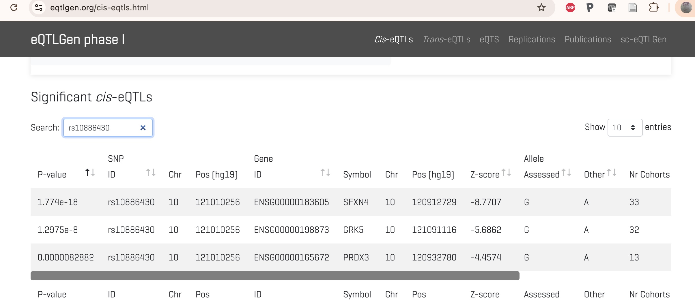
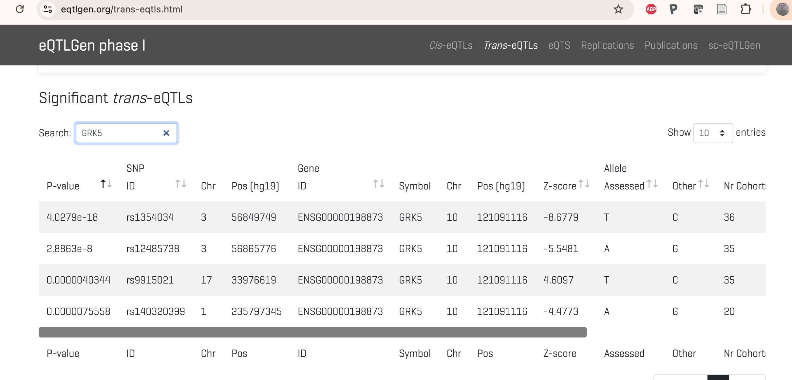
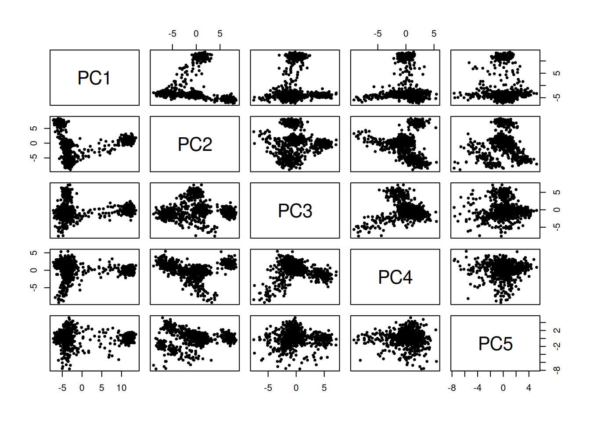
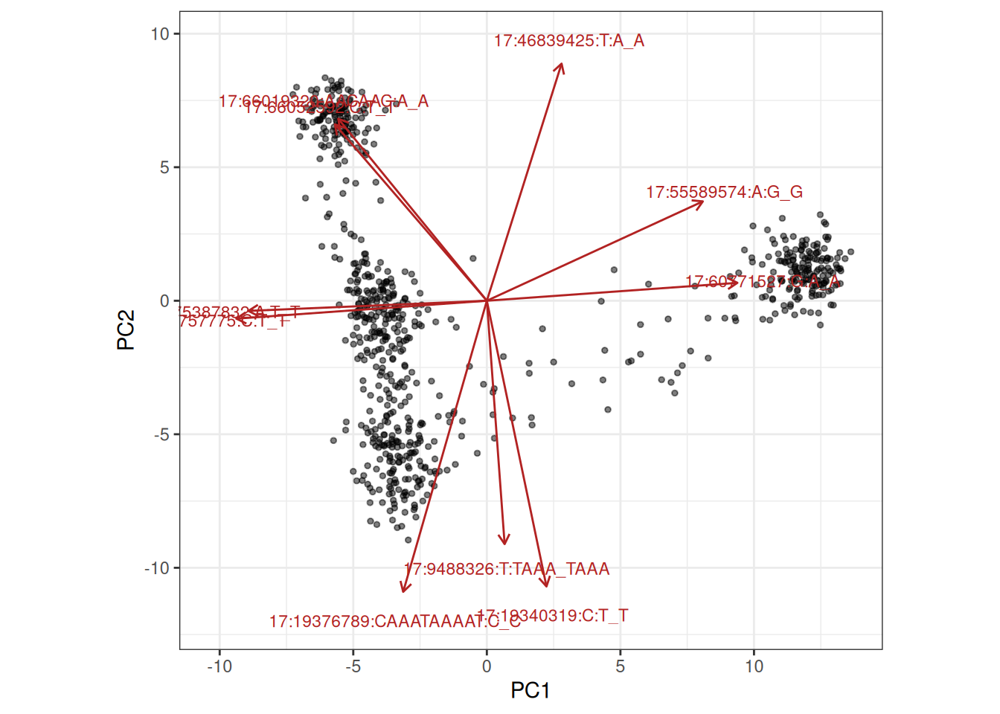
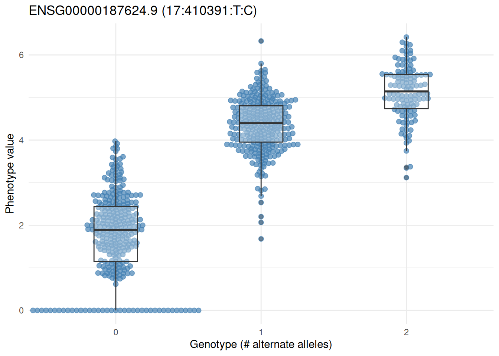

library(CSHLvc2026)
library(BEDMatrix)
if (!requireNamespace("tQTLExperiment"))
BiocManager::install("vjcitn/tQTLExperiment")
library(tQTLExperiment)
geno = tQTLExperiment::cache_mage_chr17_plink()
gt = BEDMatrix(geno['bed'])
gt
## BEDMatrix: 731 x 2075523 [/root/.cache/R/BiocFileCache/CCDG_mage_chr17_plink/CCDG_mage_chr17.bed]2 Quantitative trait loci for molecular phenotypes (xQTL)
2.1 Introduction
At the inception of Mendelian genetics, traits studied were discrete characteristics. Quantitative trait loci (QTLs) are genetic elements that are associated with “continuous” quantitative characteristic.
“QTL mapping” has a long tradition. Essentially, in a collection of study subjects, an outcome is measured, for example, weight, and then chromosomes are scanned for variants that show association with variation in the outcome.
The figure from Johnson’s study in 1.2 above is an example. The trait is a score for platelet aggregation, and the variant is the SNP rs10886430. The functional followup of the hit focused on possible effects of the variant on transcription factor binding. This could be considered a followup using “reference” information, specifically obtained through ChIP-seq on cultured cell lines.
Another approach to illuminating GWAS findings concerns colocalization of GWAS hits with “population-level” information on other QTLs produced using high-throughput assays. eQTLs are genetic loci (typically SNPs) that show association with gene expression. mQTLs are loci associated with variation in DNA methylation. sQTL and pQTL are terms used for loci associated with splicing and protein abundance respectively.
For eQTL, the quantitative phenotype may have 20,000-60,000 features (genes or transcripts), each of which may be tested for association with millions of SNP genotypes. Computational burdens and multiple testing adjustments required for such general searches are significant. Two species of testing practices are commonly distinguished:
cis searches: each molecular phenotype is tested for association with variants “nearby” on the same chromosome
trans searches: all tests that are not cis are considered
A research consortium “eQTLgen” collects information on eQTL studies. We can check for cis findings on rs10886430:

There are also trans findings for GRK5 expression:

The lead SNP in the Johnson figure is associated with expression of three different genes in cis, and GRK5 expression is associated with four different SNPs in trans. Do these findings help elucidate mechanisms of thrombin-associated platelet aggregation?
In this section we aim to understand how to structure data and perform searches for xQTL, and to carry out tasks of integrative interpretation.
2.2 Genotype data for 731 1KG samples
We focus on chromosome 17. We obtained PLINK “bed”, “bim”, “fam” files for 731 thousand genome samples. The following code will extract the files from cloud storage and place them for use in a local cache.
A sample of SNPs is used to create “ancestry PCs”.

2.2.1 Exercises
Use the data in the
anno1kgdata.frame to color the points in the pairs plot according to ancestral population.Can the directional arrows shown below be used to identify genes that might be differentially expressed between populations with different ancestries?
biplot_filtered(pp, top_n = 10)
2.3 An integrative container for expression and genotype data
library(tQTLExperiment)
data(mageSEfilt, package="CSHLvc2026")
plink_paths <- cache_mage_chr17_plink()
## [ cache hit ] CCDG_mage_chr17.fam
## [ cache hit ] CCDG_mage_chr17.bim
## [ cache hit ] CCDG_mage_chr17.bed
## [ validate ] Checking .bed magic bytes ...
## [ validate ] .bed magic bytes OK.
plpre <- tools::file_path_sans_ext(plink_paths[["bed"]]) # works but not a list!
cd <- as.data.frame(colData(mageSEfilt))
mm <- model.matrix(~ batch + population + sex, data = cd)
mm <- mm[, -1, drop = FALSE] # remove (Intercept)
tqe <- tQTLExperimentFromRSE(
se = mageSEfilt,
plinkPrefix = plpre,
covariateMatrix = mm,
genome = "hg38"
)
## Extracting number of samples and rownames from CCDG_mage_chr17.fam...
## Extracting number of variants and colnames from CCDG_mage_chr17.bim...
tqe
## class: tQTLExperiment
## features: 15116 samples: 731
## assays( 1 ): pseudocounts
## rowRanges: GRanges with 15116 features
## colData( 27 ) covariates: batch, populationASW, populationBEB, populationCDX ...
## geno: 731 samples x 2075523 variants [BEDMatrix - lazy]
## plinkPrefix: /root/.cache/R/BiocFileCache/CCDG_mage_chr17_plink/CCDG_mage_chr17
## use prepareTQTL() to write inputs and get CLI commandThis structure can be used to perform tests of SNP:expression association, and we will get to the mechanics of that.
Here is one view of a simple, significant association.
plotGenotypeEffect(tqe, "17:410391:T:C", "ENSG00000187624.9")